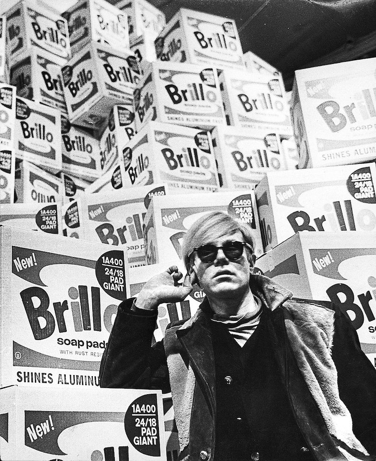
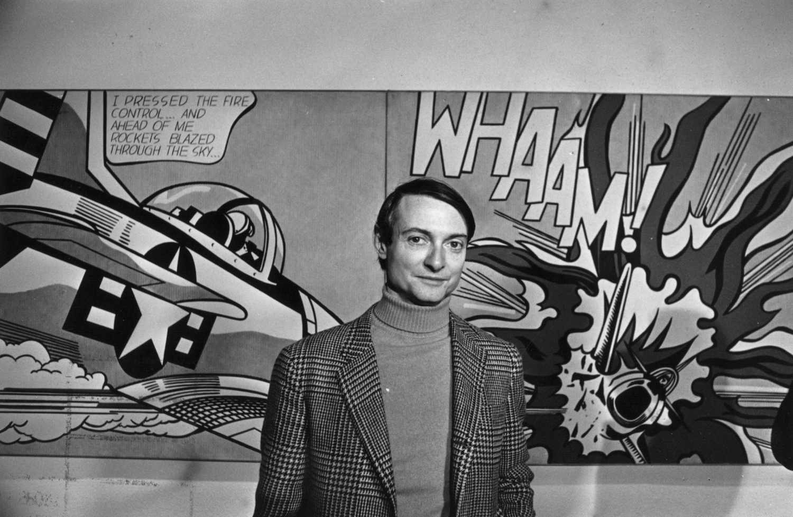
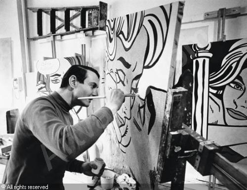
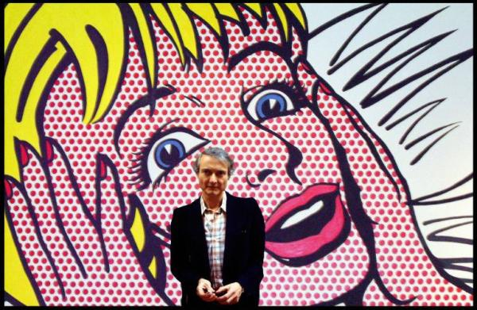
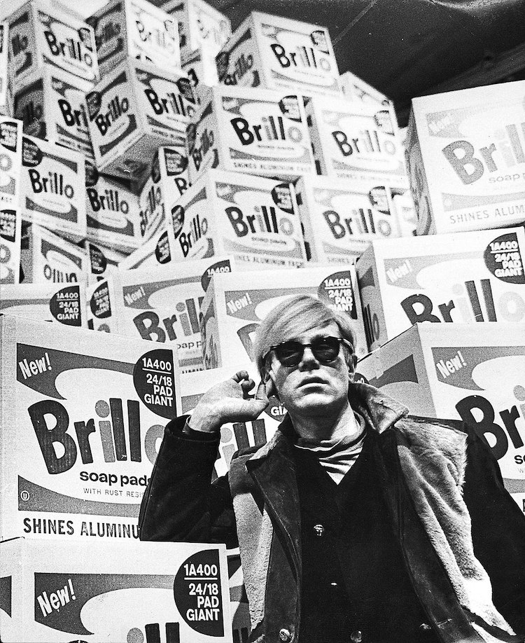
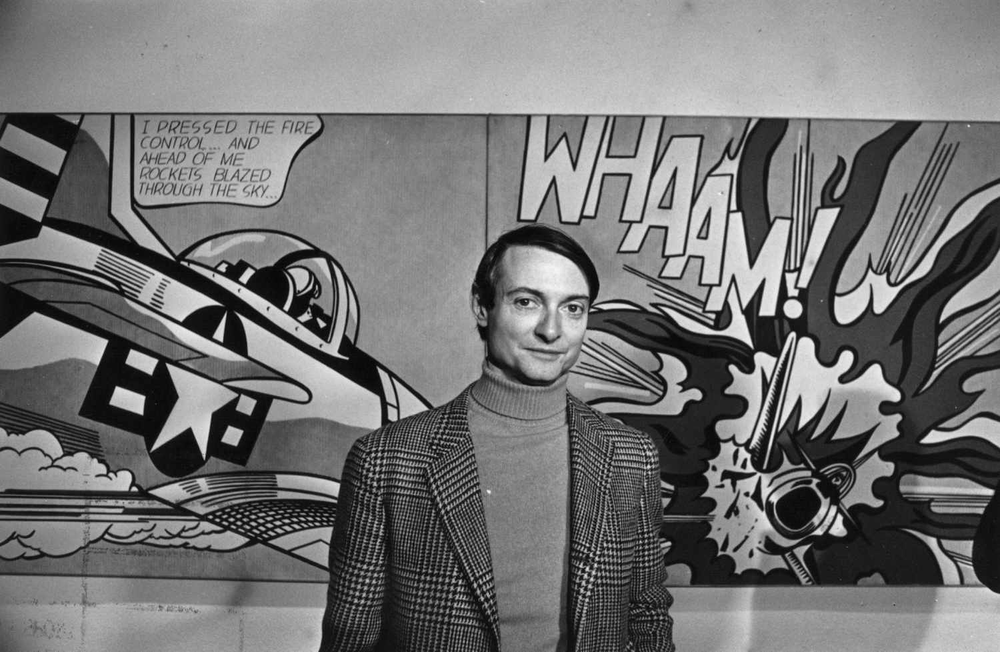
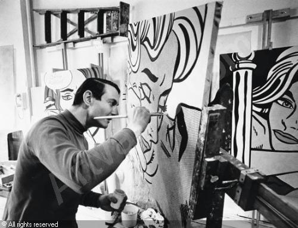
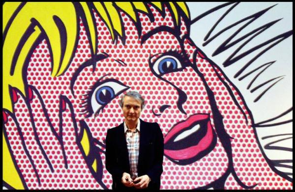

¡Bienvenidos al mundo

del Pop Art!
El Pop Art es un movimiento artístico que revolucionó la forma en que percibimos el arte y la cultura popular. Surgido en la década de 1950, este estilo utiliza imágenes de la vida cotidiana, como anuncios, cómics y objetos comerciales, para crear obras vibrantes y llenas de color. En este sitio, exploraremos su historia, sus artistas más destacados y su impacto en el mundo del arte.
El Pop Art no solo transformó el mundo del arte, sino que también influyó en la moda, el diseño gráfico y la publicidad. Este movimiento rompió las barreras entre el arte "alto" y la cultura popular, haciendo que el arte fuera accesible para todos.
Artistas como Andy Warhol y Roy Lichtenstein tomaron elementos cotidianos y los convirtieron en íconos culturales. Hoy en día, el Pop Art sigue siendo una fuente de inspiración para creativos de todo el mundo.
 






